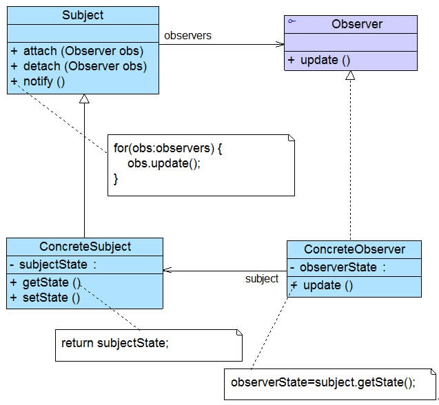
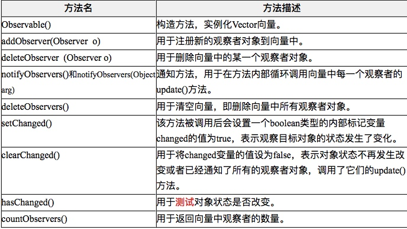

定义对象之间的一种一对多依赖关系，使得每当一个对象状态发生改变时，其相关依赖对象皆得到通知并被自动更新。观察者模式的别名包括发布-订阅（Publish/Subscribe）模式、模型-视图（Model/View）模式、源-监听器（Source/Listener）模式或从属者（Dependents）模式。观察者模式是一种对象行为型模式。
观察者模式是使用频率最高的设计模式之一，它用于建立一种对象与对象之间的依赖关系，一个对象发生改变时将自动通知其他对象，其他对象将相应作出反应。在观察者模式中，发生改变的对象称为观察目标，而被通知的对象称为观察者，一个观察目标可以对应多个观察者，而且这些观察者之间可以没有任何相互联系，可以根据需要增加和删除观察者，使得系统更易于扩展。
观察者模式中的角色
在观察者模式中包含如下几个角色：
- Subject（目标）：目标又称为主题，它是指被观察的对象。在目标中定义了一个观察者集合，一个观察目标可以接受任意数量的观察者来观察，它提供一系列方法来增加和删除观察者对象，同时它定义了通知方法notify()。目标类可以是接口，也可以是抽象类或具体类。
- ConcreteSubject（具体目标）：具体目标是目标类的子类，通常它包含有经常发生改变的数据，当它的状态发生改变时，向它的各个观察者发出通知；同时它还实现了在目标类中定义的抽象业务逻辑方法（如果有的话）。如果无须扩展目标类，则具体目标类可以省略。
- Observer（观察者）：观察者将对观察目标的改变做出反应，观察者一般定义为接口，该接口声明了更新数据的方法update()，因此又称为抽象观察者。
- ConcreteObserver（具体观察者）：在具体观察者中维护一个指向具体目标对象的引用，它存储具体观察者的有关状态，这些状态需要和具体目标的状态保持一致；它实现了在抽象观察者Observer中定义的update()方法。通常在实现时，可以调用具体目标类的attach()方法将自己添加到目标类的集合中或通过detach()方法将自己从目标类的集合中删除。

观察者模式描述了如何建立对象与对象之间的依赖关系，以及如何构造满足这种需求的系统。观察者模式包含观察目标和观察者两类对象，一个目标可以有任意数目的与之相依赖的观察者，一旦观察目标的状态发生改变，所有的观察者都将得到通知。作为对这个通知的响应，每个观察者都将监视观察目标的状态以使其状态与目标状态同步，这种交互也称为发布-订阅(Publish-Subscribe)。观察目标是通知的发布者，它发出通知时并不需要知道谁是它的观察者，可以有任意数目的观察者订阅它并接收通知。
通用代码实现
目标类的实现：
package com.swu.ObserverPattern;
import java.util.ArrayList;
import java.util.List;
/**
* 主题的实现类，如有需要可以进一步将此类抽象
*
* @author zhanjingbo
*
*/
public class Subject {
/**
* 维护所有观察者的队列
*/
private List<Observer> observers = new ArrayList<Observer>();
/**
* 将观察者添加入通知队列
*
* @param obs
*/
public void attach(Observer obs) {
this.observers.add(obs);
}
/**
* 将观察者移除出通知队列
*
* @param obs
*/
public void detach(Observer obs) {
this.observers.remove(obs);
}
/**
* 通知所有观察者
*/
public void notifyObservers() {
for (Observer observer : observers) {
observer.update();
}
}
}
观察者抽象的接口：
public interface Observer {
void update();
}
观察者的具体实现：
public class ConcerteObserversA implements Observer {
public void update() {
System.out.println("A类观察者收到消息");
}
}
JDK对观察者模式的支持
观察者模式在Java语言中的地位非常重要。在JDK的java.util包中，提供了Observable类以及Observer接口，它们构成了JDK对观察者模式的支持。如图所示：

Observer接口
在java.util.Observer接口中只声明一个方法，它充当抽象观察者，其方法声明代码如下所示：void update(Observable o, Object arg);当观察目标的状态发生变化时，该方法将会被调用，在Observer的子类中将实现update()方法，即具体观察者可以根据需要具有不同的更新行为。当调用观察目标类Observable的notifyObservers()方法时，将执行观察者类中的update()方法。
Observable类
java.util.Observable类充当观察目标类，在Observable中定义了一个向量Vector来存储观察者对象，它所包含的方法及说明见表：

我们可以直接使用Observer接口和Observable类来作为观察者模式的抽象层，再自定义具体观察者类和具体观察目标类，通过使用JDK中的Observer接口和Observable类，可以更加方便地在Java语言中应用观察者模式。